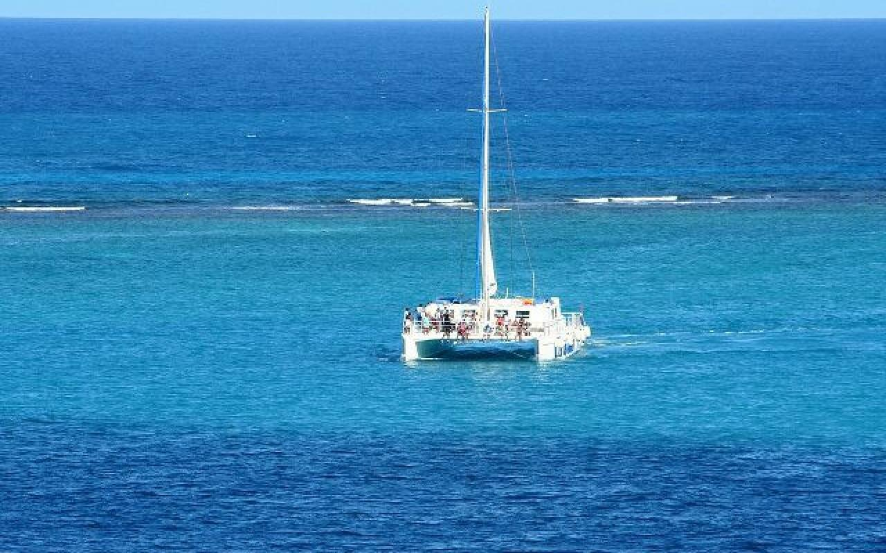

Ready to fish Guanacaste?
Seventeen boats, two bases, one honest recommendation.

The Last 2 day’s have been the best of the whole year as far as Marlin are concerned. Two boats have gone out and landed 5 Blues one day & 7 the next. Let us take the fuss and find you the best fishing charter in Tamarindo Costa Rica and in Flamingo Costa Rica for you and your friends and family to enjoy! We offer charters for up to 80 people for wedding groups in Costa Rica or large family friendly and kid friendly trips to Costa Rica. We are Steve and Liisa Quinn, proud owners of Tamarindo’s #1 Sportfishing Operation in Tamarindo Costa Rica. Book the best fishing trip to Costa Rica with us at gofishcr@gmail.com
Next up: Get Ready for Costa Rican Independence Day: September 15th, 2024! · All posts
Seventeen boats, two bases, one honest recommendation.